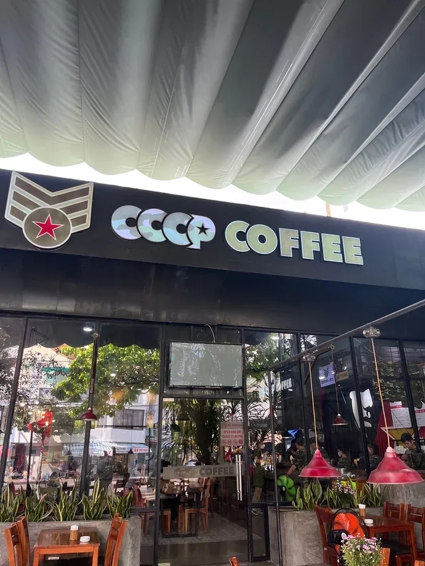
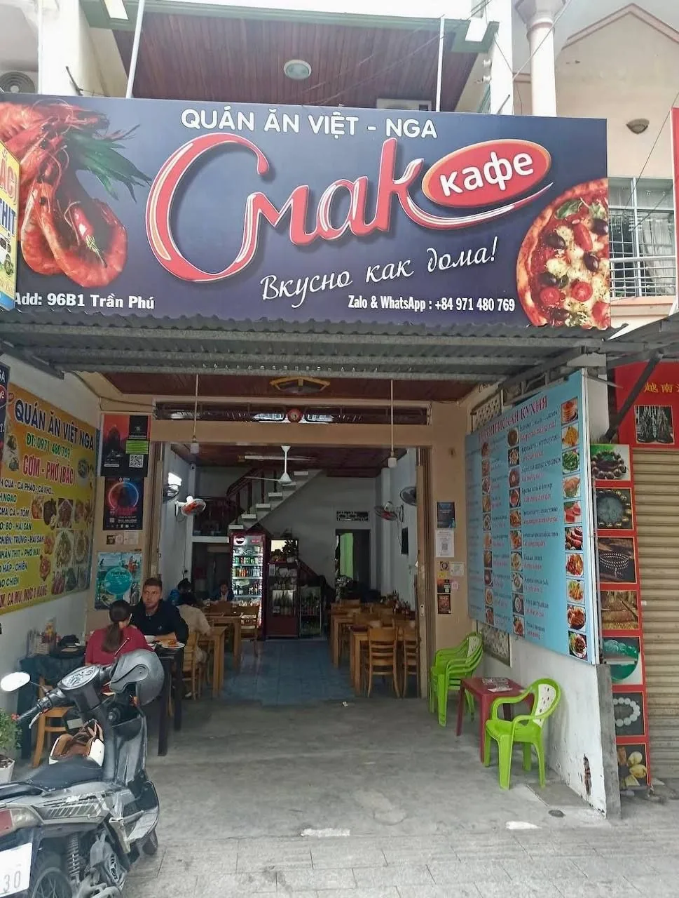
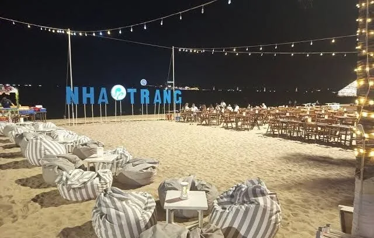

When to go to Nha Trang: the tourist seasons of a Vietnam holiday.
Author: Oksana Yasnova · 16 November 2026
We are talking about Nha Trang only.
Vietnam has no single tourist season for the whole coast. The weather in Nha Trang, Mui Ne and Da Nang differs a lot in the same months. In this article I will talk only about Nha Trang: its climate, its tourist seasons and what a holiday is like in different months of the year.
Where Nha Trang is and why come here.
Nha Trang lies in the south-central part of Vietnam, in Khanh Hoa province, on the shore of the South China Sea. The city stretches along a picturesque bay with green mountains on one side and the sea and islands on the other. Nha Trang attracts tourists with long sandy beaches, beautiful seascapes, tropical nature and well-developed city infrastructure.

Nha Trang is also especially attractive for Russian-speaking tourists, because it is quite a “Russian” city. Cafés have Russian menus, there are signs in Russian in the streets, and some Vietnamese people speak Russian quite well. So you can come here for a comfortable holiday even without knowing foreign languages. You will find Vietnamese local colour and the socialism we are used to, with red flags and Young Pioneer neckerchiefs. And because a lot of Russian relocants live in Nha Trang, the food, groceries and services we are used to are available here.




Nha Trang tourist seasons
Broadly speaking, the tourist year in Nha Trang is divided into two seasons:
- the dry season — from February to August
- the wet season — from September to January.
September and January are considered transitional months. They can be either rainy or dry — it differs from year to year.
Let's look at each period separately.
The winter tourist season: December and January.
The New Year tourist season in Nha Trang starts in December. Tourists begin to arrive in Nha Trang to celebrate the New Year.
The Vietnamese celebrate the New Year too, but their main holiday is called Tet and falls on different dates — usually at the end of January or in February.
December and January also cover the Russian New Year holidays: Christmas on 7 January, the Old New Year on the night of 13 to 14 January and Epiphany on 19 January. These are long weekends in Russia and a reason to fly somewhere warm for the winter holidays.

December and January are not a good time for a beach holiday. The sea is very stormy, the water is murky and grey, and big waves rise that make swimming impossible. Swimming is genuinely dangerous!
Tourists who stay at five-star hotels in the Cam Ranh area spend this season by the pools. Those who choose Nha Trang enjoy excursions and bathing in hot mineral springs. There are several complexes within the city, for example “100 Eggs” (100 Egg Theme Park) in the south of Nha Trang and I-Resort in the north-west of the city. Here you can swim in pools of hot mineral water rising from underground, take mud baths and relax even when the sea is stormy.

Beach season: February, March, April.
February, March and April are considered the best months for a beach holiday in Nha Trang. At this time the sea calms down and becomes warm but not yet overheated — a comfortable temperature. The water is clear and the sun is gentle.
It is in spring that the beach season is at its most beautiful. There is no strong heat and high humidity yet, as in summer, and the sea is especially clear and calm at this time.
Photos and videos turn out especially well in this season, because the angle of the sun and the blue sky and water let you take stunning pictures.
The peak of the tourist season: May – August.
May, June, July and August are a wonderful time for diving and active holidays at sea.
In these months it gets hot, but not stuffy. Humidity does not reach its maximum, and the weather is like summer in Sochi. A light breeze and small waves appear on the sea; the water is no longer smooth and calm as in spring. Children love playing in the sea and riding the waves.
This is the time for fans of water activities, including kitesurfing — flying on a parachute from the water. In these months you can see a beautiful panorama from the beach: colourful parachutes soaring over the sea against the azure sky.

If people try to scare you by saying that summer in Asia is too hot and it is better not to holiday in Nha Trang in summer, I will tell you from my own experience: summer is a wonderful time for a holiday in Nha Trang!
Yes, it is hot, as everywhere in summer, but there is plenty of greenery, sun and fruit, and the night sky is full of stars. In summer all the beach cafés are open. You can spend the whole evening by the sea, sitting at a table or in a soft beanbag, watching the waves. It is in summer that the whole tourist scene is running. This is the peak of the season, so don't be afraid to come here in summer.

September: the transition from the dry season to the wet one.
September is considered a transitional month. In September a humid haze begins to cover Nha Trang. The feeling is like sitting in a hammam: it is not really that hot, but drops of water from the humidity run down your face.
September can be rainy at times, though it is not yet the rainy season. It can be hot, or it can be cooler, when the temperature drops to 25–28 degrees.
September varies.
October: the start of the rainy season
October. At this time the rains become more frequent. It may rain for 15 minutes, but 3–4 times a day. Then there is no rain for a couple of days, and then again several times a day.
The air temperature in October stays about the same as in September, but humidity rises even higher. It becomes hard even to breathe outside, because people from the north, used to a drier climate, cope badly with high humidity. That is why the least comfortable time for a holiday in Nha Trang is October and November.

November: the peak of the rainy season
November is the lowest point of the tourist season in Nha Trang.
In November long rains, downpours and thunderstorms begin. The sea rages, huge waves rise, and it becomes so rough that it is hard even to approach it. The thunderstorms are like our May ones, only here they can last much longer.
At night the rain can pour non-stop until morning — and very loudly, because the drops are large and heavy. When they drum on the roof, it can be impossible to sleep at night because of the noise.
December: the end of the rainy season
Having started in October, the rains continue throughout November. In December there are fewer of them, but it is still the rainy season.
At the same time, the December weather differs from year to year. For example, in 2024 December was very stormy and windy. The wind was so strong that it blew out the doors of some shops if they were light.
And last year, in 2025, December was calm and warm, and there was not that much rain.
When is the best time to go to Nha Trang? Summing up
December — January: New Year, excursions, thermal spring complexes
February — April: Beach holiday, swimming, photo shoots
May — August: Sea, water activities, nightlife
September: A more budget-friendly holiday, transitional weather
October — November: Budget trips with a risk of heavy rain.
If you want to celebrate the New Year in a tropical country, come in December or January. But there is no guarantee you will be lucky with the weather.
If you love a pure beach holiday, a beautiful sea and picturesque beaches, come in February, March or April, May.
If you love a hot holiday with the sea, evening strolls, an active nightlife and plenty of energy, come in June, July or August.
If you want a holiday in Nha Trang but the cost matters to you, I recommend booking tickets for September, October or November. In these three months prices for hotels, apartments and excursions are usually the lowest. At this time you can find lots of discounts and good deals.
So if you want an inexpensive holiday and you are not put off by high humidity and possible rain, come in September, October or November.
You will save a lot.